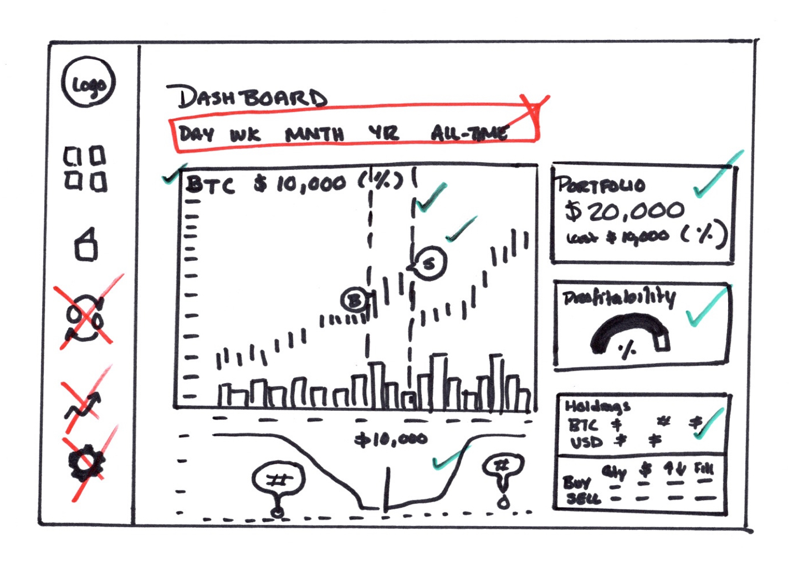
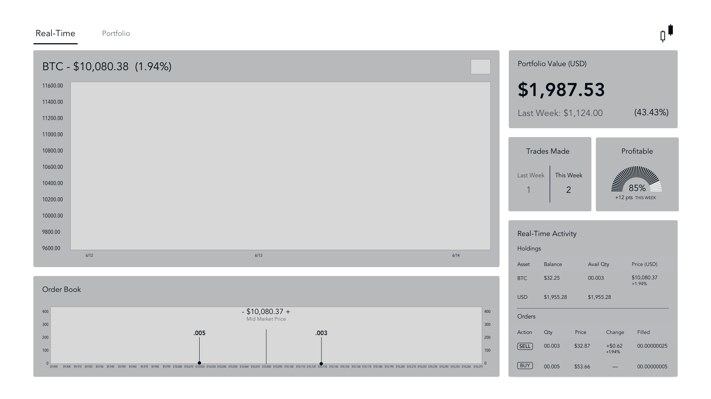
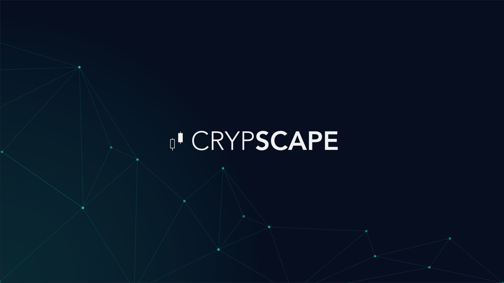
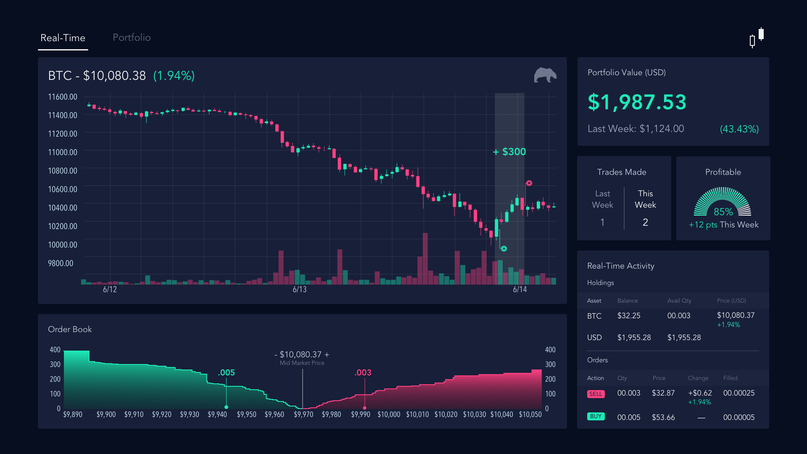
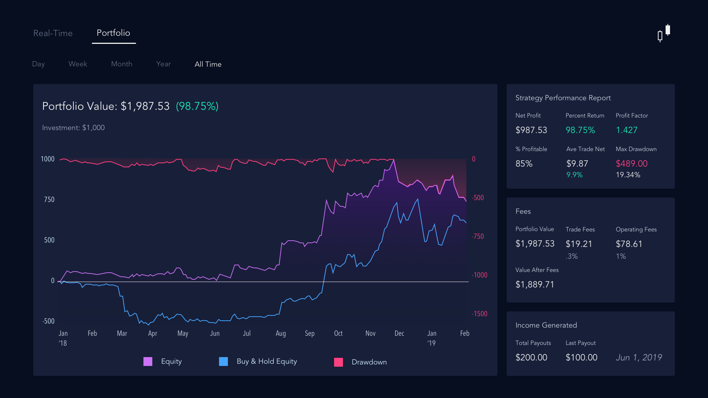

My challenge was to give members of a cryptocurrency fund a simple way to monitor the performance of an automated trading bot and the growth of their portfolios.
My client was an android software developer and cryptocurrency trader who was building an automated trading bot that would manage an investment fund for himself and a small group of users. The goal was to find a way for participants to keep an eye on the bot's performance without revealing the formula it used to make decisions.
We started by documenting his intended users (friends, family, and coworkers), challenges with existing solutions, and his goals for the bot and dashboard.
Given that the solution was intended to be a privately used application, we had a relatively small pool of user types to consider. Still, we put together some interview questions and discussed the idea with his intended customers to gauge interest, gather feedback, and test the value prop.
We also looked at competitors such as Tradeview, Coinbase, and traditional investment dashboards to learn how people used these tools and what their pain points were. Then we created an affinity diagram to discover common themes and patterns.
When it came to investments, all users prioritized the same primary concerns:
From our pool of intended users we were able to come up with three personas.
Our conversations with all users underscored the fact that they wanted to keep a close and constant eye on what their money was, grow their accounts quickly, and take advantage of sporadic market upticks.
We decided that we would focus on Enthusiasts as the primary persona for the MVP and design a tool that would allow them to monitor the bot's activities in real-time while tracking their portfolio's performance.
One UX challenge we had was that the bot was going to be hardware-based to limit the use of the algorithm to only those who were given a bot box and access credentials. So we knew we had to design an interface that was optimized for TV or desktop viewing.
We started by sketching a number of different ideas, some of which can be seen below, and iterated on the designs until we had a refined concept that we felt best accomplished our users' goals.
The idea we were most happy with was a two-page TV dashboard that displayed bot activity and portfolio metrics. This allows users to grow their funds and passively monitor their money without having to drop everything to take advantage of market opportunities.
This concept represented some unique challenges in terms of design and experience.
TV UIs are controlled by a D-pad and used at a distance from the screen. The D-pad limits navigation to four directions: up, down, left and right. Unlike web dashboards, we could not use a lot of nested interactive content.
TV screens are viewed from a greater distance than mobile and desktop screens. We had to figure out how to communicate a lot of information in while keeping the data legible, so we stuck to high-level KPI's and removed the analytical clutter of typical crypto dashboards.
TV screens treat color differently. "Hot" colors like saturated yellows and reds tend to bleed and bright whites create halos and flickering and big white backgrounds feel blinding to TV viewers. So we needed to make our visual indicators bright enough to stand out without causing discomfort or distraction.
Speaking of colors, the most commonly used colors on crypto charts and dashboards are red and green. Unfortunately, this is the worst color combination for those who are color-blind as they both end up looking like the same shade of brown. Instead, we opted for a dark pink and bright sea foam which translate to yellow and purple for the color-blind.
I built on this idea and created more detailed wireframes of the interface to validate the usability of the layout, then used those structures to create high-fidelity mock ups.
I created a prototype using Sketch to represent key features and interactions.
Let's imagine you are a member of this crypto fund. You've been a member for a little over a year and you keep it up on your screen every day to see how things are going. When you start up your bot, the first thing you'l see is the splash screen as the app loads.
When the app loads, you are taken to the Real-Time dashboard where you can view your bot's activity overlayed on a market chart. Color-blind-friendly chart indicators show when the bot buys, sells, and holds Bitcoin. Bear and Bull icons on the chart represent whether the market is on an upward or downward trend. You can also see your portfolio's collective value and growth in USD, the number of trades your bot has made over the last seven days, and what percentage of those trades made a profit. In the bottom right corner, you can watch the bot's real-time holdings and active orders complete with profit/loss calculations. 
In discovery, we learned that typical market analysis platforms display performance metrics in a strategy performance report. To help our users better evaluate the bot's performance, we included five key performance metrics on the dashboard:
Additionally, many of our users cashed out their Bitcoin to pay for living expenses or large purchases. Since this impacts their overall portfolio value and illustrates how the bot is supplementing income, we included a payout tracker.
Operating the bot will require the fund manager to pay subscription costs to access data feeds. There are also Miner fees that are assessed with every trade. The Fees tile allows you to see how these costs impact your total portfolio value.
Finally, the Portfolio dashboard charts your bot's performance against the what you would have made using the "HODL" (buy and hold) strategy. You can also see periods of drawdown; times when the bot traded for a loss.
The next step will be to bring the screens back to our group of our primary users and conduct a test scenario in which we ask them to tell us how they would answer their three prioritized questions using the dashboard:
We'll collect the results of these challenges, as well as any other feedback and observations, and use those findings to further refine the design and inform future feature decisions.